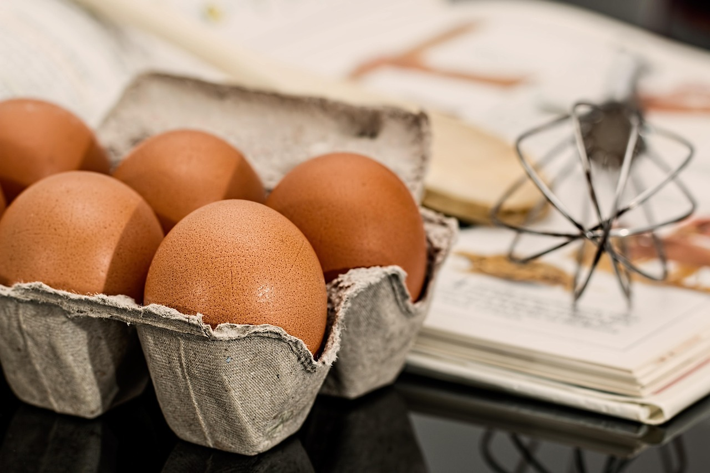

Prato Colorido
Variedade de cores indica variedade de nutrientes. Aposte em folhas, legumes e frutas.
Ver dicas
O Dia Nacional da Saúde promove reflexão e ação sobre bem‑estar. Nosso foco é a alimentação saudável para adolescentes e jovens: escolhas simples, acessíveis e sustentáveis que melhoram energia, humor e desempenho escolar.
Manter uma boa alimentação nessa fase da vida é essencial porque o corpo e a mente estão em pleno desenvolvimento. Uma dieta equilibrada contribui para fortalecer o sistema imunológico, prevenir doenças, melhorar o sono, aumentar a disposição para atividades físicas e até favorecer a autoestima. Além disso, aprender desde cedo a fazer boas escolhas alimentares cria um impacto positivo para toda a vida adulta.
Três passos práticos: PLANEJAR (organize lanches da semana), EQUILIBRAR (metade do prato com vegetais) e TROCA (substitua ultraprocessados por alimentos in natura).
Variedade de cores indica variedade de nutrientes. Aposte em folhas, legumes e frutas.
Ver dicasÁgua participa de tudo: foco, termorregulação e desempenho físico. Tenha sempre por perto.
Como beber mais
Ideias de café da manhã e lanches práticos com custo baixo e alto valor nutricional.
Explorar receitas